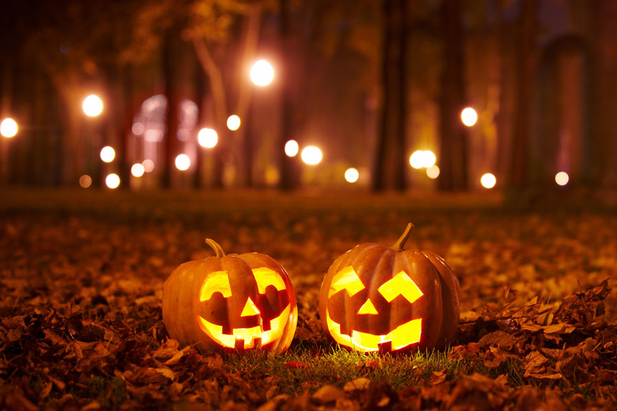
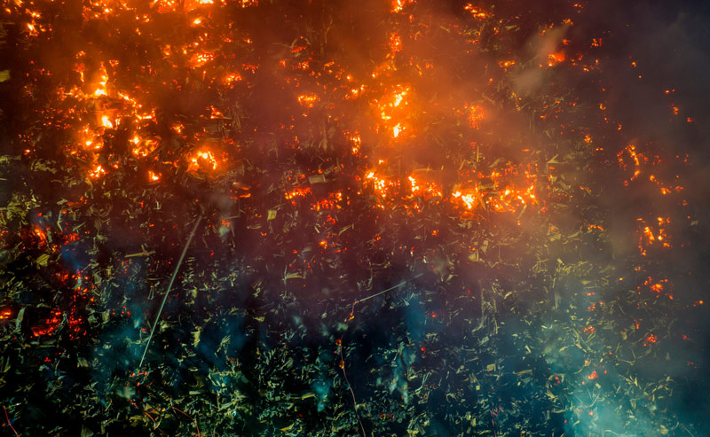

Halloween, celebrated on October 31st, is a festive occasion that blends ancient traditions, supernatural themes, and modern-day fun. Its origins can be traced back to the Celtic festival of Samhain, which marked the end of the harvest season and the onset of winter. During Samhain, the Celts believed that the veil between the living and the dead was thinnest, allowing spirits to cross over into the world of the living. People lit bonfires and wore costumes to ward off ghosts and otherworldly beings. With the spread of Christianity, Samhain gradually transformed into All Hallows' Eve, the night before All Saints' Day on November 1st, a time to honor saints and martyrs. Over time, All Hallows' Eve evolved into Halloween, combining elements of both pagan and Christian traditions. Today, Halloween is synonymous with fun and fright, particularly in countries like the United States, Canada, and the UK, although its popularity is spreading globally. One of the most iconic aspects of the celebration is trick-or-treating, where children, dressed in costumes, go door-to-door asking for candy. This tradition is believed to have evolved from medieval practices like “souling,” in which the poor would beg for food in exchange for prayers for the dead. Costumes play a major role in the festivities, with people of all ages dressing up as ghosts, monsters, superheroes, or pop culture icons. While early Halloween costumes were often spooky, modern costumes reflect a wide variety of themes, ranging from the eerie to the playful. Pumpkins are another key symbol of Halloween, often carved into jack-o'-lanterns with frightening or funny faces. The practice of carving pumpkins stems from an Irish legend about a man named Stingy Jack, who tricked the devil and was doomed to wander the earth with only a carved-out turnip to light his way. When Irish immigrants came to America, they found pumpkins more plentiful than turnips and adopted them for this tradition. Halloween is also associated with haunted houses, horror movies, and parties. Despite its spooky origins, the holiday today is primarily a lighthearted celebration of creativity, community, and fun. Whether it’s through carving pumpkins, dressing up, or sharing ghost stories, Halloween provides an opportunity for people to engage with the supernatural in a playful way.

Forest fires, also known as wildfires, are uncontrolled fires that burn in forests, grasslands, or wooded areas. These fires can spread rapidly over large areas, causing significant damage to ecosystems, wildlife, and human settlements. They are a natural part of many ecosystems and can even play a role in maintaining healthy forests, but human activities and climate change have made them more frequent and severe. Causes of Forest Fires Forest fires can be triggered by both natural and human-induced factors. Natural causes include lightning strikes, volcanic eruptions, and extreme heat from the sun. However, the majority of forest fires today are caused by human activities, such as discarded cigarette butts, unattended campfires, arson, and agricultural practices like slash-and-burn farming. Power lines and machinery can also spark fires, especially in dry, windy conditions. Impact on the Environment The immediate effects of forest fires are devastating. They destroy vast expanses of vegetation, leaving the land barren and unable to support wildlife. The destruction of trees and plants also disrupts ecosystems, displacing or killing animals and reducing biodiversity. Additionally, fires release large amounts of carbon dioxide into the atmosphere, contributing to global warming and further exacerbating climate change. However, some ecosystems have adapted to fire. For example, certain species of trees, such as the sequoia and jack pine, rely on the heat from fires to open their cones and release seeds. Fires can also clear out dead wood and underbrush, making space for new growth and reducing the risk of more intense fires in the future. Human and Economic Consequences Wildfires can have severe consequences for human communities. They destroy homes, infrastructure, and crops, leading to massive economic losses. The smoke from forest fires can cause respiratory problems, particularly for those with pre-existing conditions like asthma. In extreme cases, fires can lead to fatalities among both residents and firefighters. Prevention and Management To prevent forest fires, governments and environmental organizations promote public awareness campaigns, enforce fire bans during dry seasons, and encourage responsible behavior in forested areas. Controlled or prescribed burns are sometimes used to reduce the amount of flammable material on the forest floor, preventing larger, uncontrollable fires. Advances in technology, including satellite monitoring and early-warning systems, also help to detect and manage forest fires more effectively.
Welcome to Sigma Web Development Express.